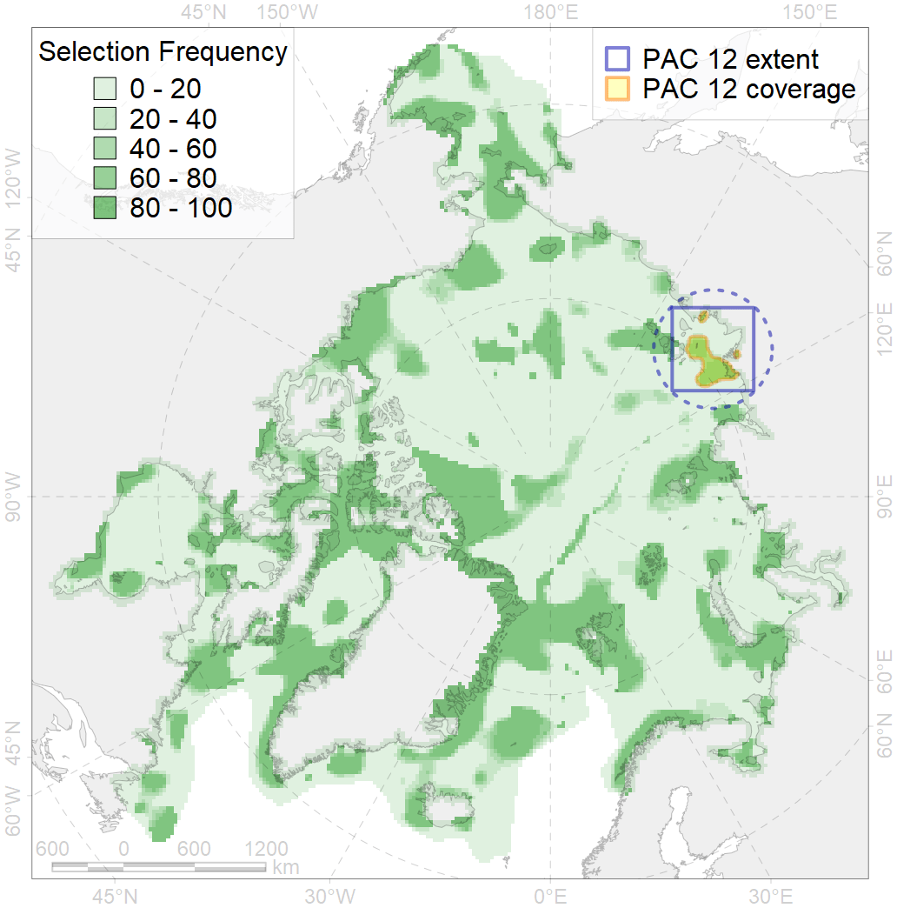
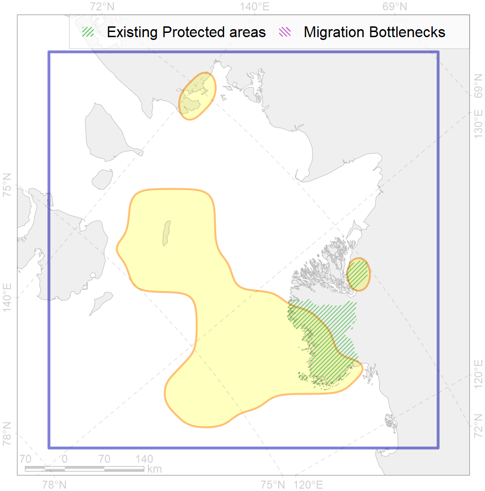

12
For more information regarding this PAC and to conduct custom spatial analysis using the PAC data or any spatial query, please consult Accenter.

1
CFs entirely within the PAC area
5
CFs at least 25% within the PAC area
8
CFs with at least 50% of their target achieved in the PAC
16
CFs with at least half of their target achieved in the PAC
| CF ID | CF Name | Proportion in the PAC | Conservation Target | Contribution to ArcNet Target Achievement | PAC’s Contribution to the Achieved Target |
|---|---|---|---|---|---|
| 7244 | Laptev Sea kelp patches (22,23) | 100.0% | 30.0% | 331.7% | 100.0% |
| 7008 | Central Laptev area of increased benthic biomass | 72.9% | 72.0% | 95.1% | 94.7% |
| 3112 | Polynyas distribution in the Eastern Laptev Sea region | 31.4% | 20.0% | 151.4% | 46.8% |
| 8023 | Laptev Sea estuaries | 31.3% | 28.0% | 109.2% | 95.2% |
| 8034 | Salt marshes of the Laptev Sea LME | 26.1% | 30.0% | 76.8% | 75.0% |
| 4095 | Estuarian (Taymyr-Lena) brackish –water fish complex; | 23.6% | 6.0% | 352.4% | 72.2% |
| 1014 | Laptev Walrus Whelping patches | 22.5% | 24.0% | 88.5% | 37.8% |
| 6080 | Thick-billed murre (Uria lomvia eleonorae) breeding colonies | 22.2% | 54.0% | 40.7% | 28.0% |
| 4061 | Feeding/nursery area of the Siberian sturgeon (Acipenser baerii) | 19.1% | 37.2% | 44.9% | 44.8% |
| 7114 | II.1.1.8. Laptev inner shelf | 17.8% | 6.6% | 230.4% | 51.9% |
| 7113 | II.1.1.7. Laptev shelf coastal domain | 17.2% | 14.2% | 109.7% | 59.7% |
| 6104 | Thick-billed murre (Uria lomvia eleonorae) breeding colonies buffer feeding area | 16.9% | 36.0% | 40.3% | 22.8% |
| 8027 | intertidal zone of the Laptev Sea LME | 16.1% | 18.0% | 63.8% | 56.6% |
| 7115 | II.1.1.9. Laptev middle shelf | 15.1% | 15.0% | 91.8% | 49.4% |
| 3028 | Marginal Ice Zone distribution in April in the Laptev Sea LME | 12.6% | 12.0% | 104.2% | 17.7% |
| 3008 | Fast ice distribution in the Eastern part of the Laptev Sea and the East-Siberian Sea | 10.7% | 6.0% | 154.4% | 33.2% |
| 2013 | Bearded seal whelping areas in the Laptev Sea | 9.3% | 24.0% | 38.2% | 18.0% |
| 3039 | Marginal Ice Zone distribution in July in the Laptev Sea LME | 8.8% | 24.0% | 32.0% | 27.4% |
| 4036 | Distribution of the Borisov’s Arctic cod (Arctogadus borisovi) | 8.6% | 13.2% | 58.1% | 25.6% |
| 7035 | Siberian shelf region | 8.6% | 8.6% | 89.3% | 25.5% |
| 1013 | Laptev Walrus haulouts | 8.6% | 90.0% | 9.5% | 9.1% |
| 6011 | Brent goose (Branta bernicla nigricans) Asian breeding&moulting grounds | 5.5% | 18.0% | 28.0% | 10.3% |
| 6045 | Stellers eider (Polysticta stelleri) Pacific moulting&migration stopovers | 5.0% | 52.8% | 9.3% | 8.6% |
| 4077 | Fish zoogeography, Arctic Region, High-Arctic Shelf Province, Laptev – East-Siberian District | 5.0% | 12.0% | 36.7% | 19.4% |
| 4008 | Feeding / nursery area of the Arctic Cisco (Coregonus autumnalis), Eurasian populations | 4.0% | 38.4% | 9.2% | 8.6% |
| 4010 | Feeding area of the Muksun (Coregonus muksun) | 3.8% | 32.4% | 11.1% | 10.9% |
| 6006 | Brent goose (Branta bernicla bernicla) breeding&moulting grounds | 3.6% | 18.0% | 18.8% | 5.9% |
| 6073 | King eider (Somateria spectabilis) Pacific moulting&migration stopovers | 3.2% | 48.0% | 6.4% | 5.6% |
| 4015 | Feeding area of the Broad whitefish (Coregonus nasus), American populations | 3.1% | 32.4% | 8.9% | 7.6% |
| 4024 | Distribution of the Chum Salmon (Oncorhynchus keta) | 3.1% | 6.0% | 48.5% | 5.7% |
| 4014 | Feeding area of the Siberian whitefish (Coregonus pidschian) | 2.5% | 24.0% | 9.7% | 6.1% |
| 5007 | Beluga of the Barents-Kara-Laptev Sea stock general distribution | 2.4% | 24.0% | 8.9% | 5.9% |
| 4021 | Feeding area of the Inconnu (Stenodus leucichthys nelma), Euro-Asian populations | 2.4% | 32.4% | 6.9% | 5.8% |
| 9012 | polar bear of the LV (Laptev Sea) subpopulation distribution | 2.4% | 26.4% | 8.0% | 6.6% |
| 7026 | Eurasian shelf region | 1.2% | 8.6% | 12.4% | 5.1% |